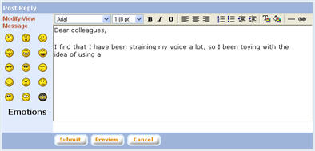

|
Discussion Forum Administrative Functions
Some administrative functions for the discussion forum can only be performed directly from the discussion forum website.
a. To go the "Discussion Forum" main page, click on the "Discussion Forum" tab on the top panel of the screen.
b. To go to the "Thread List" page, click on the topic name.
c. To go to the "Post List" page, click on the thread name.
1. Create Private Thread
a. From the "Thread List" page, click on the "New Thread" button to open the "Create Thread" pop up window
b. Enter thread details and message. Select the "Security" setting to "Private". Select user groups to be invited to participate in the discussion thread.
c. Click on "Submit" button to create the thread.
d. Private threads are only visible to members of the invited groups.
2. Delete Thread
a. From the "Post List" page, click on the "Delete" link.
3. Delete Posting
From the "Post List" page, click on the "Del" button of the corresponding post
4. Edit Thread
a. From the "Post List" page, click on the "Edit" link to open the "View / Modify Thread" pop up window.
b. Make necessary modifications. Click on "Submit" button to save the modifications made.
5. Edit Posting
a. From the "Post List" page, click on "Edit" button for the corresponding post to open the "View / Modify Message" pop up window

b. Make necessary changes to the message. Click on "Preview" to preview the message before being submitted. Click on "Submit" button to save modifications made.
6. Lock Thread
When a thread is locked, nobody can post messages on the thread. A locked thread is indicated by a lock icon in the beside the thread name.
a. From the "Post List" page, click on the "Options" button to display the options menu.
b. Click on "Lock" from the options menu
|